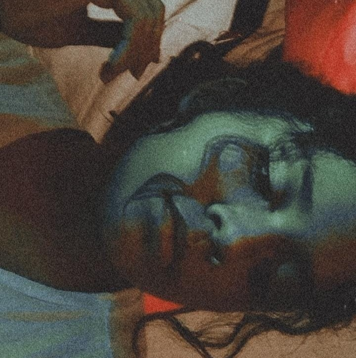
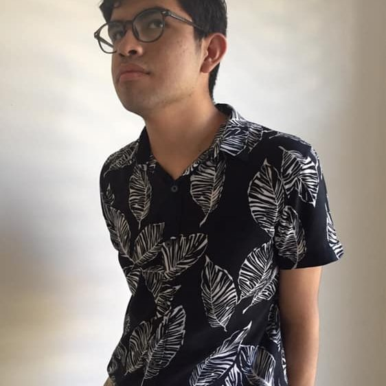

Amigos y Hermanos.
Ellos son mis amigos mas profundos.

Natalia Ireri Flores Zetter:
Es mi hermana del medio y es muy buena cosinera,buena baskebolista, ama a los hombres de anime y la hermana que a estado ahi cuando estoy mal y estoy bien. "Gracias Hermanita"

José Juan Hurtado Juárez
Pepe es mi amigo de la primaria y otros amigos que somos pocos que nos llevamos bien nos juntamos para hablar o dar una vuelta, el es bueno haciendo dinero vendiendo cualquier cosa y es un fukboy por que tiene muchas feminas atras de el.
Nohemí Martínez Vázquez
Ella es mi mejor amiga con ella puedo hablar de cualquier cosa apezar si es algo tonto o algo privado ella es muy buena para escuchar y en la escuela

Emmanuel Ignacio Sierra Pérez
El es muy buenbo para hacer amigos, decorar sus trabajos muy chido, hacerme reir, y buen modelo para revista.

Ricardo Daniel Flores Zetter.
4 "F"
Especialidad: Programacion